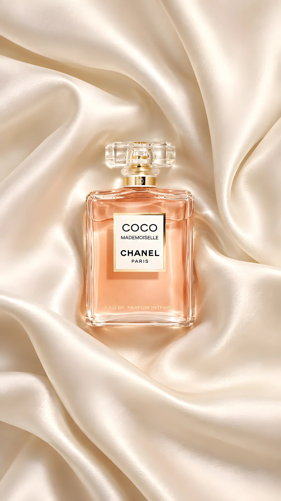
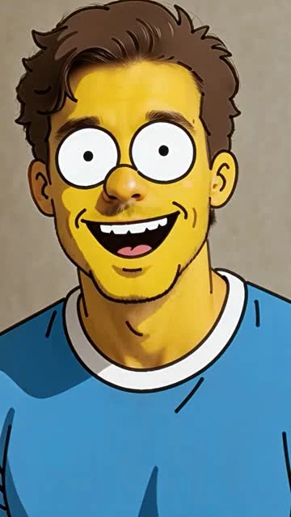
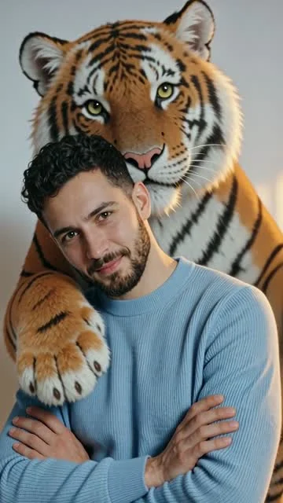
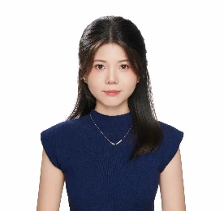

@FunAI-TechieContent.
Learn. Iterate.YouTube 独立内容频道
Learn. Iterate.YouTube 独立内容频道
YouTube · AI 内容频道
从选题、制作到发布与复盘，完整参与独立内容运营。
SELECTED WORK
从创意制作，到内容实践。
显示全部 6 个项目

面向海外社交产品的视觉设计、视频制作与素材迭代。


探索产品场景、镜头表达与生成式内容的视觉一致性。

以商品细节、穿搭场景和使用演示，呈现三种零售短视频表达。
观看三条视频

From trend把海外内容趋势转化为模板思路与可展示的生成结果。
从选题、制作到发布与复盘，完整参与独立内容运营。

品牌视觉、设计规范与小程序界面的系统化表达。
浏览设计长图A LITTLE ABOUT ME

2027 届 · 网络与新媒体本科
你好！我是一名网络与新媒体专业的2027届本科生，拥有三段互联网及AI相关实习经历，主要涉及海外内容运营、英文SEO、AI视频创作与数字营销。
我对AI技术如何改变内容创作方式充满好奇，也喜欢从用户需求和市场趋势中寻找新的创意机会。
Photoshop · After Effects · CapCut · Canva · 生成式 AI
海外趋势调研 · 英文内容 · Excel · Search Console
海外广告设计实习生
海外社交产品广告素材、视频创意与投放协作。
海外增长运营
海外内容趋势、AI 模板开发与英文 SEO 内容。
产品运营
3C 客户视频模板、社媒内容分发与达人内容协作。
LET'S CONNECT
求职方向：海外广告创意 / AI 内容制作 / 海外内容营销